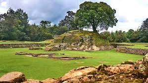
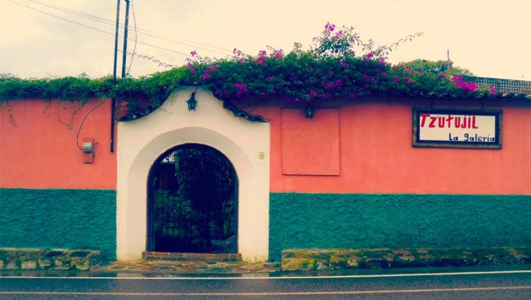
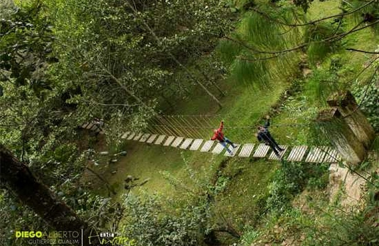
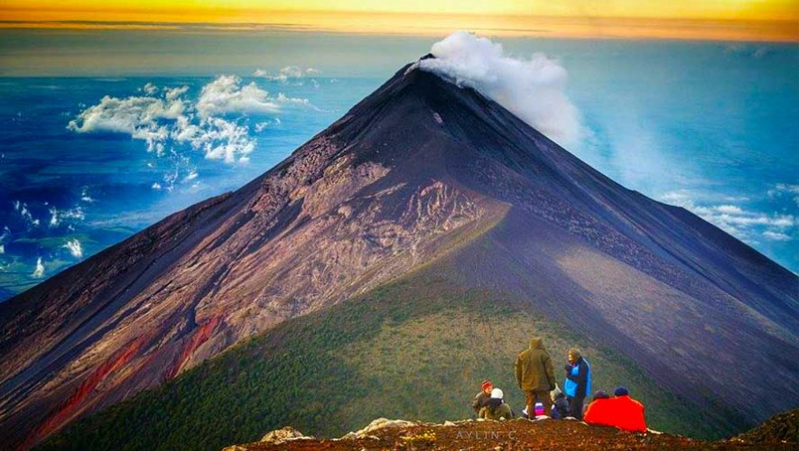
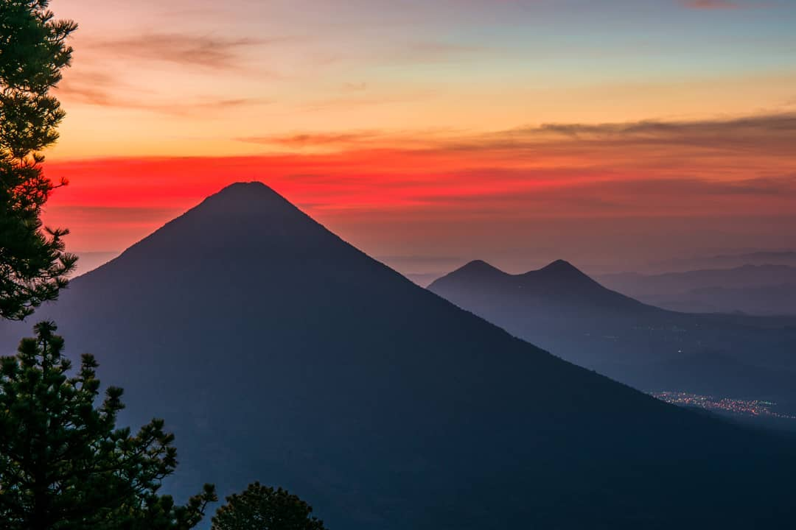

Lugares Turisticos
Iximché: es una ciudad maya en Guatemala fundada alrededor del año 1463. Los pobladores originarios fueron los kaqchiqueles. Este interesante lugar fue la última capital de los mayas y la primera capital fundada por los españoles. El sitio arqueológico está localizado en Tecpán, Chimaltenango.

Galería de Arte Tzutujil Chimaltenango: Chimaltenango se encuentra en la región central de Guatemala, cuenta con destinos naturales muy lindos llenos de vida y de muchos colores. Seguro te has preguntado por lugares a los que puedes ir en este departamento que te sorprenderá siempre, con sus bellezas escondidas y con todos los pequeños lugares que puedes explorar. Si viajas a este lugar ya tienes una lista de cosas por hacer, lugares por conocer de este bello departamento lleno de hermosa naturaleza. ¡Que linda es Guatemala!

Parque Ecológico La Taltuza Loca en Chimaltenango: Disfruta de estos lugares de entretenimiento cerca de Chimaltenango. Este es un destino perfecto para salir de la rutina sin viajar muy lejos. Seguro disfrutarás de un día único, ya que encontrarás desde balnearios hasta parques naturales cerca de la Ciudad de Guatemala. Además, son sitios turísticos que puedes visitar con toda la familia. Disfruta y conoce las maravillas de nuestro país.

El volcán de Fuego: es a lo que se le conoce como un estratovolcán activo situado entre los departamentos de Sacatepéquez, Escuintla y Chimaltenango, al centro-sur de Guatemala. El volcán de Fuego es el volcán más activo de Centroamérica y uno de los más activos del mundo.

Volcán de Acatenango en Chimaltenango: El Acatenango es un estratovolcan de Guatemala, en cercanías de la ciudad de Antigua en el municipio de Acatenango (Chimaltenango). El volcán tiene dos picos, el Pico Mayor y Yepocapa (3880 m s. n. m.), que también es conocido como «Tres Hermanas». Acatenango se encuentra unido al volcán de Fuego, y la unión de ambos, es conocida como «La Horqueta»; de hecho, el macizo de Fuego-Acatenango comprende una cadena montañosa de cinco o más volcanes de dirección norte-sur en forma perpendicular al arco centroamericano de Guatemala.
